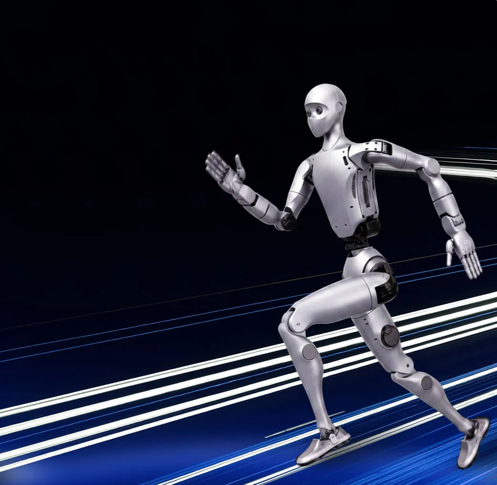

Unitree H2 Air
Full-size entry ~180 cm
Altezza~180 cm
DoF31
TierAir
UsoDemo / lab
Famiglia H2 · Robot umanoidi
Gamma Unitree H2 esposta con schede dedicate: Air (43.874 €), H2 (68.085 €), H2-D dual-arm e H2 Plus (Isaac GR00T / preordine). Listino e supporto in Italia da Abra Robotics.
Full-size entry ~180 cm
Full-size EDU / ricerca · 31 DoF

Dual-arm su piantana / deployment

Isaac GR00T · AGX Thor · Sharpa Wave — fine 2026
I prezzi di alcuni prodotti della serie (es. H2-D e H2 Plus) possono subire variazioni in base a configurazione e disponibilità.
Approfondimento: guida Unitree H2 in Italia · tutti gli umanoidi · listino End-User.
L'H2 è l'umanoide bipede a grandezza naturale di Unitree. In piedi misura 1820 × 456 × 218 mm e pesa circa 70 kg con la batteria. Ha 31 gradi di libertà: 6 per ogni gamba, 7 per ogni braccio, 3 nella vita e 2 nella testa, che è una testa bionica con lineamenti del volto.
I motori sono sincroni a magneti permanenti a rotore interno, con cuscinetti a rulli incrociati di tipo industriale. Unitree dichiara una coppia massima di 360 N·m alle articolazioni delle gambe e di 120 N·m a quelle delle braccia; il carico al braccio è di circa 7 kg nominali e circa 15 kg di picco. La struttura usa alluminio aeronautico, lega di titanio e tecnopolimeri ad alta resistenza.
La batteria a sgancio rapido è da 15 Ah (0,972 kWh, tensione massima 75,6 V) e garantisce circa 3 ore di autonomia secondo Unitree. Per la percezione l'H2 ha una telecamera binoculare grandangolare nella testa, un array di microfoni con altoparlante per l'interazione vocale, Wi-Fi 6 e Bluetooth 5.2. Il software si aggiorna via OTA.
A listino la versione base si chiama H2 Basic (H2 Air): è il corpo completo con 31 gradi di libertà, telecomando, caricabatterie e batteria a sgancio rapido, ma senza mani dexterous e senza sviluppo software con SDK. È adatta a showroom, eventi, attività di comunicazione e a chi vuole valutare un umanoide full-size prima di un progetto di ricerca.
L'H2 EDU è la versione per sviluppo: aggiunge lo sviluppo software con SDK (accesso via SDK, documentato da Unitree nel manuale di sviluppo), le mani dexterous a scelta tra più modelli e il modulo di calcolo ad alte prestazioni. Per il calcolo Unitree indica un PC1 Intel Core i5 per le funzioni di piattaforma e un PC2 Intel Core i7 per lo sviluppo personalizzato; come modulo aggiuntivo cita, tra gli altri, NVIDIA Jetson Thor. Nella presentazione dell'H2 Unitree parla di un chip da 2070 TOPS.
Nel nostro listino trovi i moduli di calcolo per l'H2 (Intel Core i7, Jetson Orin NX, Jetson AGX Orin, Jetson AGX Thor) e le configurazioni H2 EDU Smart, da A a M: il contenuto di ciascuna è nella relativa scheda e nel listino End-User.
Le mani si scelgono in base al compito. Per prese semplici e ripetibili basta la pinza Dex1-1; per manipolazione con controllo di forza c'è la Dex3-1 a tre dita, anche in versione tattile; per la manipolazione fine e l'apprendimento per imitazione servono mani a cinque dita come la Dex5-1, le Inspire o le BrainCo Revo.
Tra gli accessori più richiesti ci sono la batteria di ricambio, il caricabatterie rapido e il telecomando: con una seconda batteria si alternano le sessioni di prova senza attendere la ricarica.
La serie dual-arm di Unitree prende il busto dell'H2 e lo monta su basi diverse. Secondo la pagina ufficiale H2-D, l'H2-A Standard è su base fissa (19 gradi di libertà, circa 33,5 kg), l'H2-D Standard è su carrello spostabile a mano con colonna di sollevamento (19 gradi di libertà, circa 148 kg) e l'H2-D Flagship è su base mobile a trazione differenziale (20 gradi di libertà, circa 120 kg, fino a 1,5 m/s, con LiDAR e telecamera di profondità sulla base).
Tutte e tre hanno bracci a 7 gradi di libertà con sbraccio di circa 0,6 m e carico di circa 7 kg nominali per braccio (circa 15 kg di picco). Grazie al busto inclinabile da 0 a 115° (H2-D) e alla colonna, Unitree indica un'area di lavoro dal pavimento fino a 2 metri di altezza. Gli impieghi che Unitree elenca sono automazione industriale, smistamento e magazzino, ricerca e didattica, accoglienza e retail, raccolta dati per l'addestramento di modelli di AI fisica.
A listino le configurazioni sono indicate come H2-A Standard, H2-D Standard e H2-D Ultimate, ciascuna da A a M; la composizione esatta (mani, calcolo, base) si conferma nella scheda H2-D e in preventivo. L'H2 Plus è la fascia alta in preordine, descritta nella sua scheda.
Ricerca su locomozione e controllo del corpo intero a scala umana: con 1,82 m di altezza e gambe lunghe 1045 mm (coscia più polpaccio), l'H2 permette di studiare problemi che su un umanoide compatto non emergono, come equilibrio con masse maggiori, passi lunghi e interazione con arredi e attrezzature pensati per le persone.
Interazione uomo-robot e AI incorporata: testa con lineamenti, voce e visione binoculare lo rendono una piattaforma per studi di HRI, assistenza e accoglienza. Le versioni EDU con calcolo aggiuntivo servono per far girare a bordo modelli di visione e linguaggio.
Dimostrazioni e showroom: l'H2 Air è la scelta per chi deve mostrare un umanoide full-size in fiere, musei e presentazioni aziendali. Unitree raccomanda di mantenere sempre una distanza di sicurezza adeguata tra robot e persone: per i primi test in laboratorio conviene prevedere uno spazio dedicato e un sistema di sospensione.
Il Unitree G1 è alto circa 1,32 m e pesa circa 35 kg: costa meno, è più facile da trasportare e ha l'ecosistema software più diffuso nei laboratori. L'R1 è il bipede più compatto e accessibile, per didattica e primi progetti. L'H2 è la scelta quando la scala umana è un requisito del progetto.
Se il compito è solo la manipolazione su banco o in reparto, un busto dual-arm può essere più adatto di un bipede: oltre all'H2-D valuta il G1-D e l'R1-D. Il confronto completo è nella pagina robot umanoidi Unitree e nell'articolo confronto umanoidi 2026.
I prezzi nelle schede sono End-User IVA esclusa, con spedizione e dazio in Italia inclusi; per H2-D e H2 Plus il prezzo dipende dalla configurazione e si conferma in preventivo. Prima dell'ordine definiamo con te versione, mani, calcolo e accessori in base all'uso reale, e verifichiamo se l'acquisto rientra negli incentivi disponibili.
Per università ed enti di ricerca prepariamo offerte e documentazione per gare pubbliche (vedi Università e Ricerca); per le imprese che vogliono partire da una prova di fattibilità c'è la guida al POC con un robot umanoide. Fattura italiana e supporto in italiano.
H2 è l'umanoide full-size Unitree (~180 cm, 31 DoF, coppia fino a 360 N·m alle gambe). Abra Robotics lo fornisce in Italia nelle varianti Air, H2, H2-D e H2 Plus.
H2 Air è l'entry full-size; H2 è la configurazione ricerca/EDU con computing espandibile; H2-D è la linea dual-arm per deployment; H2 Plus aggiunge Jetson AGX Thor, mani Sharpa Wave e stack Isaac GR00T (disponibilità prevista fine 2026).
Listino End-User indicativo: H2 Air 43.874 €, H2 68.085 € (IVA esclusa). H2-D da 79.900 € e H2 Plus da 149.900 € (i prezzi di questi prodotti possono subire variazioni). Dettaglio: https://abrarobotics.com/h2.html
G1 (~132 cm) è più compatto e accessibile per demo e molti lab. H2 è human-scale (~180 cm) per HRI, locomozione full-size e scenari dove serve presenza umana. Assessment Abra: https://abrarobotics.com/assessment.html
Secondo Unitree l'H2 misura 1820 × 456 × 218 mm in piedi e pesa circa 70 kg con la batteria, con 31 gradi di libertà e circa 3 ore di autonomia.
No: secondo la tabella Unitree lo sviluppo software con SDK è disponibile solo sulla versione EDU, che aggiunge anche mani dexterous e modulo di calcolo ad alte prestazioni.